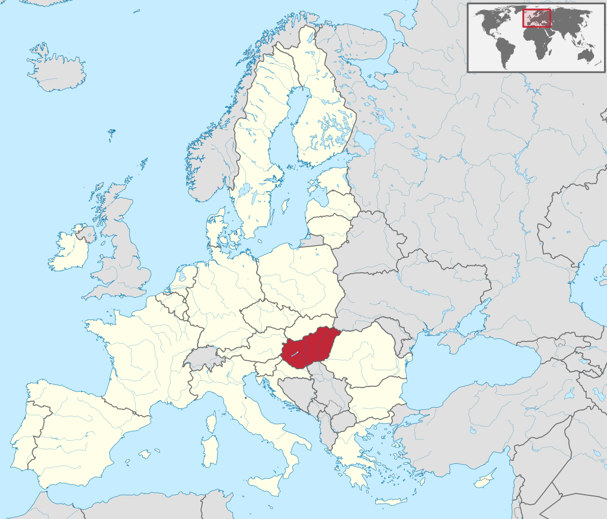

A Hungria é um país da Europa de Leste. Faz fronteira com a Eslováquia a norte, Roménia a leste, Sérvia a sul, Croácia a sudoeste, Eslovénia a oeste, Áustria a noroeste e Ucrânia a nordeste. Podemos observá-la no mapa abaixo, assinalada a vermelho.
A capital do país é a cidade de Budapeste. A Hungria é membro da União Europeia. A língua oficial é o húngaro, que é a língua não indo-europeia mais falada na Europa.
Aqui podemos observar uma lista das cidades mais populosas da país.
